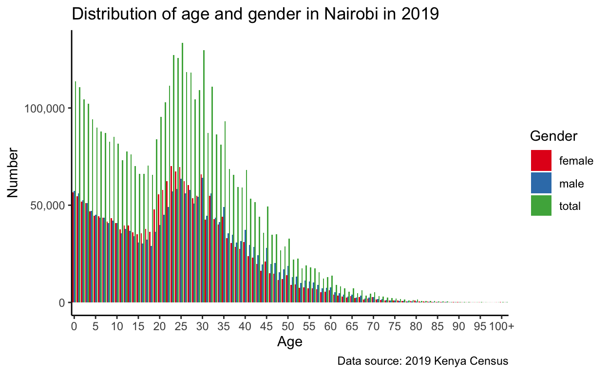

Introduction
The distribution of population by age, sex, and administrative unit from the 2019 Kenyan census can be downloaded here: https://www.knbs.or.ke/?wpdmpro=2019-kenya-population-and-housing-census-volume-iii-distribution-of-population-by-age-sex-and-administrative-units.
And while it is great that they make it easily available, and it is easy to look-up a particular result, it is not overly useful to do larger-scale data analysis, such as building a Bayesian hierarchical model.
In this blog post I convert a PDF of Kenyan census results of counts, by age and sex, by county and sub-county, into a tidy dataset that can be analysed. I will draw on and introduce a bunch of handy packages including: janitor by Firke (2021), pdftools by Ooms (2020), tidyverse by Wickham et al. (2019), and stringi by Gagolewski (2020).
If you just want the cleaned tidied data, then it is here.
Workspace set-up
To get started I need to load the necessary packages.
And then I need to read in the PDF that I want to convert.
# Read in the PDF
all_content <- pdftools::pdf_text("inputs/pdfs/2019_Kenya_census.pdf")
The pdf_text function from pdftools is useful when you have a PDF and you want to read the content into R. For many recently produced PDFs it’ll work pretty well, but there are alternatives. If the PDF is an image, then it won’t work and you’ll need to turn to OCR.
You can see a page of the PDF here:
knitr::include_graphics("images/2020-04-10-screenshot-of-census.png")

Get the data into R
The first challenge is to get the dataset into a format that we can more easily manipulate. The way that I am going to do this is to consider each page of the PDF and extract the relevant parts. To do this, I first write a function that I want to apply to each page.
# The function is going to take an input of a page
get_data <- function(i){
# Just look at the page of interest
# Based on https://stackoverflow.com/questions/47793326/tabulize-function-in-r
just_page_i <- stringi::stri_split_lines(all_content[[i]])[[1]]
# Grab the name of the location
area <- just_page_i[3] %>% str_squish()
area <- str_to_title(area)
# Grab the type of table
type_of_table <- just_page_i[2] %>% str_squish()
# Get rid of the top matter
just_page_i_no_header <- just_page_i[5:length(just_page_i)] # Just manually for now, but could create some rules if needed
# Get rid of the bottom matter
just_page_i_no_header_no_footer <- just_page_i_no_header[1:62] # Just manually for now, but could create some rules if needed
# Convert into a tibble
demography_data <- tibble(all = just_page_i_no_header_no_footer)
# # Split columns
demography_data <-
demography_data %>%
mutate(all = str_squish(all)) %>% # Any space more than two spaces is squished down to one
mutate(all = str_replace(all, "10 -14", "10-14")) %>%
mutate(all = str_replace(all, "Not Stated", "NotStated")) %>% # Any space more than two spaces is squished down to one
separate(col = all,
into = c("age", "male", "female", "total", "age_2", "male_2", "female_2", "total_2"),
sep = " ", # Just looking for a space. Seems to work fine because the tables are pretty nicely laid out
remove = TRUE,
fill = "right"
)
# They are side by side at the moment, need to append to bottom
demography_data_long <-
rbind(demography_data %>% select(age, male, female, total),
demography_data %>%
select(age_2, male_2, female_2, total_2) %>%
rename(age = age_2, male = male_2, female = female_2, total = total_2)
)
# There is one row of NAs, so remove it
demography_data_long <-
demography_data_long %>%
janitor::remove_empty(which = c("rows"))
# Add the area and the page
demography_data_long$area <- area
demography_data_long$table <- type_of_table
demography_data_long$page <- i
rm(just_page_i,
i,
area,
type_of_table,
just_page_i_no_header,
just_page_i_no_header_no_footer,
demography_data)
return(demography_data_long)
}
At this point, I have a function that does what I need to each page of the PDF. I’m going to use the function map_dfr from the purrr package to apply that function to each page, and then combine all the outputs into one tibble.
Cleaning
I now need to clean the dataset to make it useful.
Values
The first step is to make the numbers into actual numbers, rather than characters. Before I can convert the type I need to remove anything that is not a number otherwise it’ll be converted into an NA. So I first identify any values that are not numbers so that I can remove them.
# Need to convert male, female, and total to integers
# First find the characters that should not be in there
all_tables %>%
select(male, female, total) %>%
mutate_all(~str_remove_all(., "[:digit:]")) %>%
mutate_all(~str_remove_all(., ",")) %>%
mutate_all(~str_remove_all(., "_")) %>%
mutate_all(~str_remove_all(., "-")) %>%
distinct()
# A tibble: 3 x 3
male female total
<chr> <chr> <chr>
1 "" "" ""
2 "Aug" "" ""
3 "Jun" "" "" # We clearly need to remove ",", "_", and "-".
# This also highlights a few issues on p. 185 that need to be manually adjusted
# https://twitter.com/RohanAlexander/status/1244337583016022018
all_tables$male[all_tables$male == "23-Jun"] <- 4923
all_tables$male[all_tables$male == "15-Aug"] <- 4611
While you could use the janitor package here, it is worthwhile at least first looking at what is going on because sometimes there is odd stuff that janitor (and other packages) will deal with, but not in a way that you want. In this case, they’ve used Excel or similar and this has converted a couple of their entries into dates. If we just took the numbers from the column then we’d have 23 and 15 here, but by inspecting the column we can use Excel to reverse the process and enter the correct values of 4,923 and 4,611, respectively.
Having identified everything that needs to be removed, we can do the actual removal and convert our character column of numbers to integers.
all_tables <-
all_tables %>%
mutate_at(vars(male, female, total), ~str_remove_all(., ",")) %>% # First get rid of commas
mutate_at(vars(male, female, total), ~str_replace(., "_", "0")) %>%
mutate_at(vars(male, female, total), ~str_replace(., "-", "0")) %>%
mutate_at(vars(male, female, total), ~as.integer(.))
Areas
The next thing to clean is the areas. We know that there are 47 counties in Kenya, and a whole bunch of sub-counties. They give us a list on pages 19 to 22 of the PDF (document pages 7 to 10). However, this list is not complete, and there are a few minor issues that we’ll deal with later.
In any case, I first need to fix a few inconsistencies.
# Fix some area names
all_tables$area[all_tables$area == "Taita/ Taveta"] <- "Taita/Taveta"
all_tables$area[all_tables$area == "Elgeyo/ Marakwet"] <- "Elgeyo/Marakwet"
all_tables$area[all_tables$area == "Nairobi City"] <- "Nairobi"
Kenya has 47 counties, each of which has sub-counties. The PDF has them arranged as the county data then the sub-counties, without designating which is which. We can use the names, to a certain extent, but in a handful of cases, there is a sub-county that has the same name as a county so we need to first fix that.
The PDF is made-up of three tables.
all_tables$table %>% table()
.
Table 2.3: Distribution of Population by Age, Sex*, County and Sub- County
48216
Table 2.4a: Distribution of Rural Population by Age, Sex* and County
5535
Table 2.4b: Distribution of Urban Population by Age, Sex* and County
5781 So I can first get the names of the counties based on those first two tables and then reconcile them to get a list of the counties.
As I hoped, there are 47 of them. But before I can add a flag based on those names, I need to deal with the sub-counties that share their name. We will do this based on the page, then looking it up and deciding which is the county page and which is the sub-county page.
# The following have the issue of the name being used for both a county and a sub-county:
all_tables %>%
filter(table == "Table 2.3: Distribution of Population by Age, Sex*, County and Sub- County") %>%
filter(area %in% c("Busia",
"Garissa",
"Homa Bay",
"Isiolo",
"Kiambu",
"Machakos",
"Makueni",
"Samburu",
"Siaya",
"Tana River",
"Vihiga",
"West Pokot")
) %>%
select(area, page) %>%
distinct()
# A tibble: 24 x 2
area page
<chr> <int>
1 Samburu 42
2 Tana River 53
3 Tana River 56
4 Garissa 65
5 Garissa 69
6 Isiolo 98
7 Isiolo 100
8 Machakos 149
9 Machakos 154
10 Makueni 159
# … with 14 more rowsNow we can add the flag for whether the area is a county and adjust for the ones that are troublesome,
# Add flag for whether it is a county or a sub-county
all_tables <-
all_tables %>%
mutate(area_type = if_else(area %in% list_counties$area, "county", "sub-county"))
# Fix the flag for the ones that have their names used twice
all_tables <-
all_tables %>%
mutate(area_type = case_when(
area == "Samburu" & page == 42 ~ "sub-county",
area == "Tana River" & page == 56 ~ "sub-county",
area == "Garissa" & page == 69 ~ "sub-county",
area == "Isiolo" & page == 100 ~ "sub-county",
area == "Machakos" & page == 154 ~ "sub-county",
area == "Makueni" & page == 164 ~ "sub-county",
area == "Kiambu" & page == 213 ~ "sub-county",
area == "West Pokot" & page == 233 ~ "sub-county",
area == "Vihiga" & page == 333 ~ "sub-county",
area == "Busia" & page == 353 ~ "sub-county",
area == "Siaya" & page == 360 ~ "sub-county",
area == "Homa Bay" & page == 375 ~ "sub-county",
TRUE ~ area_type
)
)
rm(list_counties)
Ages
Now we can deal with the ages.
First we need to fix some errors.
0 0-4 1 10 10-14 10-19
484 484 484 484 482 1 [1] "Total" "0" "1" "2" "3" "4" # Looks like there should be 484, so need to follow up on some:
all_tables$age[all_tables$age == "NotStated"] <- "Not Stated"
all_tables$age[all_tables$age == "43594"] <- "5-9"
all_tables$age[all_tables$age == "43752"] <- "10-14"
all_tables$age[all_tables$age == "9-14"] <- "5-9"
all_tables$age[all_tables$age == "10-19"] <- "10-14"
The census has done some of the work of putting together age-groups for us, but we want to make it easy to just focus on the counts by single-year-age. As such I’ll add a flag as to the type of age it is: an age group, such as ages 0 to 5, or a single age, such as 1.
At the moment, age is a character variable. We have a decision to make here, because we don’t want it to be a character variable (because it won’t graph properly), but we don’t want it to be a numeric, because there is total and also 100+ in there. So for now, we’ll just make it into a factor, and at least that will be able to be nicely graphed.
all_tables$age <- as_factor(all_tables$age)
Checks
Check gender sum
Given the format of the data, at this point it is easy to check that total is the sum of male and female.
# Check the parts and the sums
follow_up <-
all_tables %>%
mutate(check_sum = male + female,
totals_match = if_else(total == check_sum, 1, 0)
) %>%
filter(totals_match == 0)
There is just one that seems wrong.
# There is just one that looks wrong
all_tables$male[all_tables$age == "10" & all_tables$page == 187] <- as.integer(1)
rm(follow_up)
Check rural urban split
The census provides different tables for the total of each county and sub-county; and then within each county, for the number in an urban area in that county, and the number in a urban area in that county. Some counties only have an urban count, but we’d like to make sure that the sum of rural and urban counts equals the total count. This requires reshaping the data from a long to wide format.
First, construct different tables for each of the three. I just do it manually, but I could probably do this a nicer way.
# Table 2.3
table_2_3 <- all_tables %>%
filter(table == "Table 2.3: Distribution of Population by Age, Sex*, County and Sub- County")
table_2_4a <- all_tables %>%
filter(table == "Table 2.4a: Distribution of Rural Population by Age, Sex* and County")
table_2_4b <- all_tables %>%
filter(table == "Table 2.4b: Distribution of Urban Population by Age, Sex* and County")
Having constructed the constituent parts, I now join then based on age, area, and whether it is a county.
both_2_4s <- full_join(table_2_4a, table_2_4b, by = c("age", "area", "area_type"), suffix = c("_rural", "_urban"))
all <- full_join(table_2_3, both_2_4s, by = c("age", "area", "area_type"), suffix = c("_all", "_"))
all <-
all %>%
mutate(page = glue::glue('Total from p. {page}, rural from p. {page_rural}, urban from p. {page_urban}')) %>%
select(-page, -page_rural, -page_urban,
-table, -table_rural, -table_urban,
-age_type_rural, -age_type_urban
)
rm(both_2_4s, table_2_3, table_2_4a, table_2_4b)
We can now check that the sum of rural and urban is the same as the total.
# Check that the urban + rural = total
follow_up <-
all %>%
mutate(total_from_bits = total_rural + total_urban,
check_total_is_rural_plus_urban = if_else(total == total_from_bits, 1, 0),
total_from_bits - total) %>%
filter(check_total_is_rural_plus_urban == 0)
head(follow_up)
# A tibble: 3 x 16
age male female total area area_type age_type
<fct> <int> <int> <int> <chr> <chr> <chr>
1 Not … 31 10 41 Naku… county single-…
2 Total 434287 441379 875666 Bomet county age-gro…
3 Not … 3 2 5 Bomet county single-…
# … with 9 more variables: male_rural <int>,
# female_rural <int>, total_rural <int>,
# male_urban <int>, female_urban <int>,
# total_urban <int>, total_from_bits <int>,
# check_total_is_rural_plus_urban <dbl>, `total_from_bits
# - total` <int>rm(follow_up)
There are just a few, but they only have a a difference of 1, so I’ll just move on.
Check ages sum to age-groups
Finally, I want to check that the single age counts sum to the age-groups.
# One last thing to check is that the ages sum to their age-groups.
follow_up <-
all %>%
mutate(groups = case_when(age %in% c("0", "1", "2", "3", "4", "0-4") ~ "0-4",
age %in% c("5", "6", "7", "8", "9", "5-9") ~ "5-9",
age %in% c("10", "11", "12", "13", "14", "10-14") ~ "10-14",
age %in% c("15", "16", "17", "18", "19", "15-19") ~ "15-19",
age %in% c("20", "21", "22", "23", "24", "20-24") ~ "20-24",
age %in% c("25", "26", "27", "28", "29", "25-29") ~ "25-29",
age %in% c("30", "31", "32", "33", "34", "30-34") ~ "30-34",
age %in% c("35", "36", "37", "38", "39", "35-39") ~ "35-39",
age %in% c("40", "41", "42", "43", "44", "40-44") ~ "40-44",
age %in% c("45", "46", "47", "48", "49", "45-49") ~ "45-49",
age %in% c("50", "51", "52", "53", "54", "50-54") ~ "50-54",
age %in% c("55", "56", "57", "58", "59", "55-59") ~ "55-59",
age %in% c("60", "61", "62", "63", "64", "60-64") ~ "60-64",
age %in% c("65", "66", "67", "68", "69", "65-69") ~ "65-69",
age %in% c("70", "71", "72", "73", "74", "70-74") ~ "70-74",
age %in% c("75", "76", "77", "78", "79", "75-79") ~ "75-79",
age %in% c("80", "81", "82", "83", "84", "80-84") ~ "80-84",
age %in% c("85", "86", "87", "88", "89", "85-89") ~ "85-89",
age %in% c("90", "91", "92", "93", "94", "90-94") ~ "90-94",
age %in% c("95", "96", "97", "98", "99", "95-99") ~ "95-99",
TRUE ~ "Other")
) %>%
group_by(area_type, area, groups) %>%
mutate(group_sum = sum(total, na.rm = FALSE),
group_sum = group_sum / 2,
difference = total - group_sum) %>%
ungroup() %>%
filter(age == groups) %>%
filter(total != group_sum)
head(follow_up)
# A tibble: 6 x 16
age male female total area area_type age_type
<fct> <int> <int> <int> <chr> <chr> <chr>
1 0-4 1 5 6 Mt. … sub-coun… age-gro…
2 5-9 1 2 3 Mt. … sub-coun… age-gro…
3 10-14 6 0 6 Mt. … sub-coun… age-gro…
4 15-19 9 1 10 Mt. … sub-coun… age-gro…
5 20-24 21 4 25 Mt. … sub-coun… age-gro…
6 25-29 59 9 68 Mt. … sub-coun… age-gro…
# … with 9 more variables: male_rural <int>,
# female_rural <int>, total_rural <int>,
# male_urban <int>, female_urban <int>,
# total_urban <int>, groups <chr>, group_sum <dbl>,
# difference <dbl>rm(follow_up)
Mt. Kenya Forest, Aberdare Forest, Kakamega Forest are all slightly dodgy. I can’t see it in the documentation, but it looks like they have apportioned these between various countries. It’s understandable why they’d do this and it’s probably not a big deal, so I’ll just move on.
Final tidying
Now that we are confident that everything is looking good, we can just convert it to long-format so that it is easy to work with.
all <-
all %>%
rename(male_total = male,
female_total = female,
total_total = total) %>%
pivot_longer(cols = c(male_total, female_total, total_total, male_rural, female_rural, total_rural, male_urban, female_urban, total_urban),
names_to = "type",
values_to = "number"
) %>%
separate(col = type, into = c("gender", "part_of_area"), sep = "_") %>%
select(area, area_type, part_of_area, age, age_type, gender, number)
write_csv(all, file = "outputs/data/cleaned_kenya_2019_census.csv")
head(all)
# A tibble: 6 x 7
area area_type part_of_area age age_type gender number
<chr> <chr> <chr> <fct> <chr> <chr> <int>
1 Momb… county total Total age-gro… male 610257
2 Momb… county total Total age-gro… female 598046
3 Momb… county total Total age-gro… total 1208303
4 Momb… county rural Total age-gro… male NA
5 Momb… county rural Total age-gro… female NA
6 Momb… county rural Total age-gro… total NAMake Monica’s dataset
The original purpose of all of this was to make a table for Monica. She needed single-year counts, by gender, for the counties.
monicas_dataset <-
all %>%
filter(area_type == "county") %>%
filter(part_of_area == "total") %>%
filter(age_type == "single-year") %>%
select(area, age, gender, number)
head(monicas_dataset)
# A tibble: 6 x 4
area age gender number
<chr> <fct> <chr> <int>
1 Mombasa 0 male 15111
2 Mombasa 0 female 15009
3 Mombasa 0 total 30120
4 Mombasa 1 male 15805
5 Mombasa 1 female 15308
6 Mombasa 1 total 31113write_csv(monicas_dataset, "outputs/data/monicas_dataset.csv")
I’ll leave the fancy stats to Monica, but I’ll just make a quick graph of Nairobi.
monicas_dataset %>%
filter(area == "Nairobi") %>%
ggplot() +
geom_col(aes(x = age, y = number, fill = gender), position = "dodge") +
scale_y_continuous(labels = scales::comma) +
scale_x_discrete(breaks = c(seq(from = 0, to = 99, by = 5), "100+")) +
theme_classic()+
scale_fill_brewer(palette = "Set1") +
labs(y = "Number",
x = "Age",
fill = "Gender",
title = "Distribution of age and gender in Nairobi in 2019",
caption = "Data source: 2019 Kenya Census")
